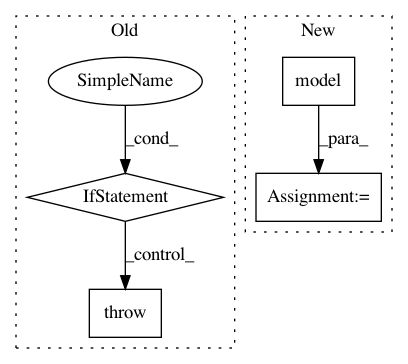

7e0249a084341cf2e658b928bc91768b2db036d1,torchreid/engine/engine.py,Engine,visactmap,#Engine#Any#Any#Any#Any#Any#,297
Before Change
- Zhou et al. Omni-Scale Feature Learning for Person Re-Identification. ICCV, 2019.
self.model.eval()
if not hasattr(self.model, "featuremaps"):
raise AttributeError("Model must have method featuremaps(), which returns the feature maps "
"of shape (b, c, h, w)")
imagenet_mean = [0.485, 0.456, 0.406]
imagenet_std = [0.229, 0.224, 0.225]
tensor2pil = torchvision.transforms.ToPILImage()
After Change
// forward to get convolutional feature maps
try:
outputs = self.model(imgs, output_featuremaps_only=True)
except TypeError:
raise TypeError("forward() got unexpected keyword argument "output_featuremaps_only". " \
"Please add output_featuremaps_only as an input argument to forward(). When " \
"output_featuremaps_only=True, return feature maps only.")
In pattern: SUPERPATTERN
Frequency: 3
Non-data size: 4
Instances
Project Name: KaiyangZhou/deep-person-reid
Commit Name: 7e0249a084341cf2e658b928bc91768b2db036d1
Time: 2019-08-03
Author: k.zhou@qmul.ac.uk
File Name: torchreid/engine/engine.py
Class Name: Engine
Method Name: visactmap
Project Name: tensorflow/cleverhans
Commit Name: a995657c9b1e6a1cc087dccf5b5cf047fa5dca38
Time: 2017-03-29
Author: ngp5056@cse.psu.edu
File Name: cleverhans/attacks.py
Class Name: SaliencyMapMethod
Method Name: generate
Project Name: tensorflow/models
Commit Name: dfe2a43fb378b557f3dfc4315417afb291cd16b7
Time: 2018-09-25
Author: aman2930@gmail.com
File Name: official/mnist/mnist_tpu.py
Class Name:
Method Name: model_fn